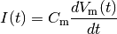
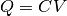
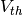
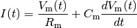
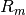
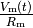
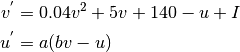
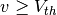
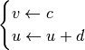

Neuron Models¶
The simulator covers most widely used neuron models from a simplest Integrate and Fire Model to a rather complex Hodgkin-Huxley(in progress) models. All the models are parametrisable with easy interface to change the parameters. Also, a network can have a combination of these models. For examples, for a layered feedforward network, input layer can be comprised of one model and the next layer be another and so on.
Note
No two models can be in the layer for a layered network
Integrate and Fire¶
Integrate and Fire(InF) is one of the simplest and earliest neuron model. The model is given by,

which is simply the time derivative of the law of capacitance, . With input current applied, the membrane potential increases with time until it reaches a threshold voltage  at which point a spike (delta function) occurs and the voltage is reset back to the resting potential. One of the major shortcoming of this model is the fact that there is no sense of time-dependent memory meaning the voltage is retained if it is below threshold. In real neurons, there is diffusion of ions which reduces the voltage.
There are four parameters for this neuron model:
| Parameter | Description |
|---|---|
| Absolute Refractory period | Inactive period after a spike |
| Threshold voltage | Voltage at which a neuron emits a spike |
| Reset voltage | Membrane voltage neuron drop to after a spike |
| Action potential | Initial membrane potential |
Leaky Integrate and Fire¶
The memory problem present in Integrate and Fire model is mitigated in Leaky Integrate and Fire model by introducing a ‘leakage’ of membrane potential, reflecting diffusion of ions that takes place throught the membrane to return the membrane potential to a resting potential value. The model can be described with,

where  is the membrane resistance. The leakage term  is introduced which governs the leakage of ions resulting the voltage to return back to resting potential when no input current is applied.
| Parameter | Description |
|---|---|
| Absolute Refractory period | Inactive period after a spike |
| Threshold voltage | Voltage at which a neuron emits a spike |
| Reset voltage | Membrane voltage neuron drop to after a spike |
| Capacitance | Membrane capacitance |
| Resistance | Membrane resistance which governs current leakage |
| Action potential | Initial membrane potential |
Izhikevich¶
Integrate and fire and Leaky integrate and fire models are simplest neurons models which replicates some dynamics of the neurons but they are not biologically plausible models. For a more biologically plausible models many neurons models are proposed but they get complex resulting in large computational requirements which again is not very useful to model a network of such neurons. Izhikevich neuron model falls in the middle, encompassing biological plausibility and simple and efficient enough to model computationally.
Izhikevich model reduces a complex biologically plausible Hodgkin and Huxley model to a two-dimensional(2-D) system of ordinary differential equations of the form,

with auxiliary after-spike resetting
if , then 
Here, represents the membrane potential of the neuron and  represents a membrane recovery variable, which accounts of ionic (in)activation. When the membrane potential reaches a threshold, , the membrane voltage is reset back to the resting potential.
Please refer to Izhikevich paper for detailed information.
represents a membrane recovery variable, which accounts of ionic (in)activation. When the membrane potential reaches a threshold, , the membrane voltage is reset back to the resting potential.
Please refer to Izhikevich paper for detailed information.
The parameters that are available for users to configure from the interface are:
| Parameter | Description |
|---|---|
| a | Describes time scale of the recovery variable |
| b | Describes sensitivity of the recovery variable |
| c | Describes after-spike reset value of |
| d | Describes after-spike reset of the recovery variable |
| Threshold voltage | Threshold potential for spike |
| Initial action potential | Starting membrane potential |
| Initial membrane recovery | Initial membrane recovery value |
| Action potential | Initial action potential |
| Membrane recovery | Membrane recovery value() |